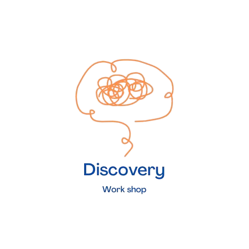

Discovery Workshop – ورشة اكتشاف الذات
ورشة عميقة ومتكاملة لمساعدتك على اكتشاف ذاتك بصدق ووعي،
وفهم مشاعرك الخفية واحتياجاتك الحقيقية، والتعرف على تأثير
الصدمات النفسية على قراراتك وعلاقاتك، من خلال أدوات نفسية
عملية وآمنة تدعم رحلتك نحو الشفاء والتوازن.
4 أيام متتالية
3 ساعات يوميًا
شهادة حضور
Online عبر Zoom
ماذا ستستفيد من هذه الورشة؟
- اكتشاف احتياجاتك الحقيقية ومشاعرك المخفية التي تؤثر على سلوكك.
- فهم تأثير الصدمات النفسية على قراراتك وعلاقاتك الشخصية.
- التعرف على المكاسب الثانوية وراء بعض السلوكيات أو الأعراض المزمنة.
- تعلم طرق فعالة للتحرر من الصدمات وتحديد أنواعها وأسبابها.
- التواصل مع نظامك الداخلي وبناء علاقة وعي تدعم الشفاء النفسي.